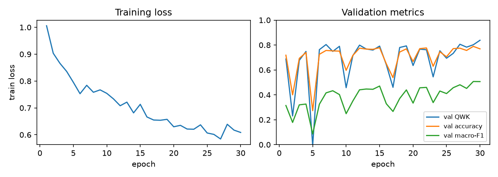
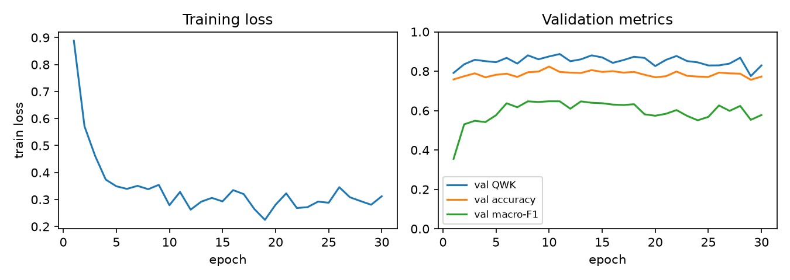
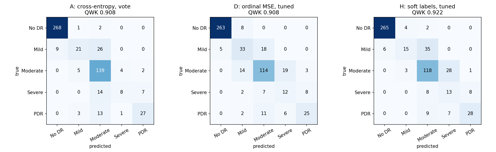
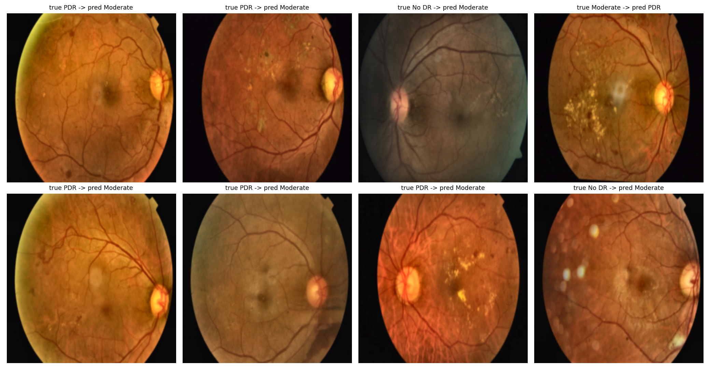
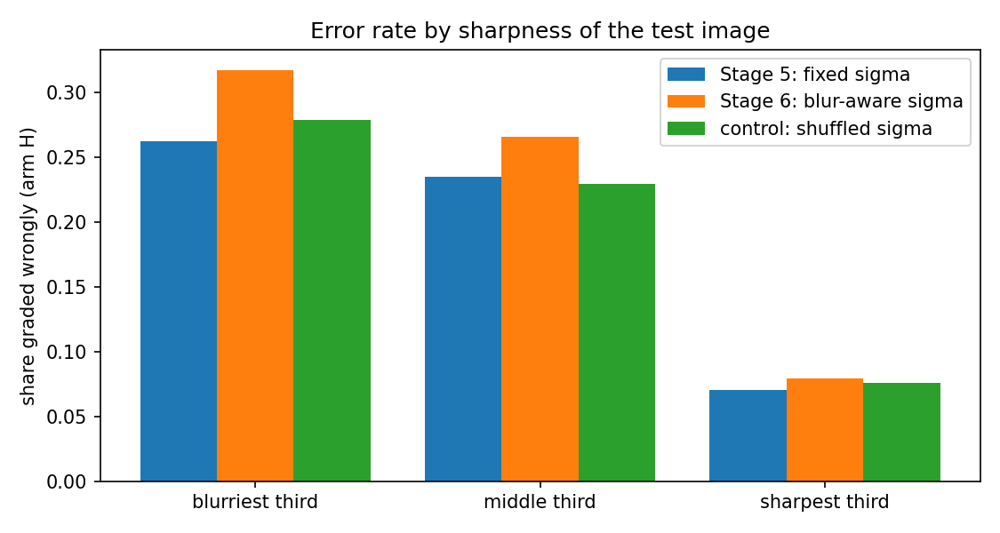

What we did. We selected one published method, re-implemented it (it has no public code), ran it on the public APTOS 2019 dataset, and measured how far our result is from the paper's. We then tested a series of hypotheses, each written down with numeric predictions before it was run, and report each result as it fell, including the failures.
Base paper. Chilukoti et al., "A reliable diabetic retinopathy grading via transfer learning and ensemble learning with quadratic weighted kappa metric", BMC Medical Informatics and Decision Making 24:37 (2024). EfficientNet-B3, CLAHE + Gaussian-blur pre-processing, cross-entropy, 10-snapshot majority-vote ensemble. Reported QWK 0.954 on APTOS 2019.
What we reproduced. Run exactly as published (300 px, 60 epochs, batch 16, lr 1e-3) the method gives QWK 0.81–0.82. With a lower learning rate (1e-4) and flip/rotation augmentation it reaches 0.897 ± 0.004 (3 seeds). That is our baseline. The best result of any kind we reached is 0.918 (a 3-member 5-fold ensemble, test set opened once). The paper's 0.954 was not reproduced and lies outside our 95% interval [0.900, 0.935].
What the hypotheses showed. Only one idea gave a consistent, pre-registered gain: using the order of the grades (ordinal regression, +0.016 QWK, fewer large errors). Soft ordinal labels match it. Focal loss, class weighting, blur-aware training, a retina-pretrained backbone (RETFound), and a stacked training recipe did not beat the baseline family. Everything lands between 0.90 and 0.92, and the differences are about the size of run-to-run noise (about ±0.01).
| # | Stage | Hypothesis (one change) | Test QWK | vs baseline | Predictions that held | Verdict |
|---|---|---|---|---|---|---|
| 3 | Baseline: paper pipeline + augmentation + lr 1e-4, cross-entropy, snapshot vote | 0.897 ± 0.004 | – | – | reference | |
| H1 | 4 | Ordinal regression (MSE on the grade, tuned cut-offs) beats 5-class cross-entropy | 0.914 ± 0.004 | +0.017 | 5 of 8 | Supported, not significant in every seed |
| H2 | 4e | Focal loss helps rare grades | 0.901 / 0.911 | +0.004 / +0.004 | 6 of 8 (with H3) | Not supported |
| H3 | 4e | Class-balanced ordinal regression raises Severe recall | 0.908 | −0.006 vs H1 | (see H2) | Weak: one seed drives the gain |
| H4 | 4b–4c | Training levers, bigger backbones and 5-fold ensembles close the gap | 0.918 | +0.021 | 4 of 7 | Helps, gap to paper remains (0.036) |
| H5 | 4d | EyePACS pre-training fails only because of a high fine-tune lr | OOF 0.906 | −0.014 vs ImageNet | 2 of 7 | Rejected |
| H6 | 5 | Gaussian soft ordinal labels (sigma 0.5) | 0.916 ± 0.005 | +0.019 | 7 of 8 | Ties H1; fewest large errors |
| H7 | 6 | Blur-aware label width lowers errors on blurry images | 0.909 ± 0.006 | −0.007 vs H6 | 6 of 7 | Not supported |
| H8 | 7 | Retina-pretrained ViT-L (RETFound) beats ImageNet pre-training | 0.899 ± 0.006 | −0.017 vs H6 | 3 of 7 | Not supported |
| H9 | 8 | Stage 4b training levers stack on soft labels | 0.903 ± 0.002 | −0.013 vs H6 | 1 of 8 | Not supported |
Test QWK is on the same 550 images throughout, 10-snapshot ensemble with validation-tuned cut-offs unless noted (H8, H9 are single models with TTA; H8 uses 5 snapshots). "vs baseline" compares with the 0.897 baseline unless another reference is named. The baseline re-run on Kaggle (seed 42) scored 0.908 instead of 0.898, so platform and re-run noise is about ±0.01.
Decisions we ask you to approve (details in Section 8):
1. Frame the work as a reproduction with an honest gap analysis, plus pre-registered hypotheses with mostly negative results.
2. Make H1 (ordinal regression) the main hypothesis of the paper (the pre-registered Stage 4 test), with H6 (soft labels) as its refinement and H2, H3, H7, H8, H9 as ablations and negative results.
3. Proceed to the IEEE-format paper and the defence on this basis.
Chilukoti S.V., Shan L., Tida V.S., Maida A.S., Hei X. (2024), BMC Medical Informatics and Decision Making 24:37, doi 10.1186/s12911-024-02446-x (open access, CC BY 4.0). The task is five-class grading of diabetic retinopathy (DR) from colour fundus photographs: 0 No DR, 1 Mild, 2 Moderate, 3 Severe, 4 Proliferative (PDR).
| Component | What the paper describes |
|---|---|
| Pre-processing | CLAHE on the luminance channel, then Gaussian blur |
| Model | ImageNet-pretrained EfficientNet-B3 with a 3-layer fully connected head (512, 512, 5) |
| Training | Adam, lr 1e-3, weight decay 1e-4, gradient clipping 0.1, 60 epochs (strategy 1) |
| Ensemble | Snapshot ensemble: predictions from 10 evenly spaced epochs combined by majority vote |
| Metric | Quadratic weighted kappa (QWK), which penalises an error by the square of its distance in grades |
| Reported | QWK 0.954 on APTOS 2019 (ImageNet init, single model, accuracy 0.942); 0.967 with EyePACS pre-training and the ensemble |
| Item | Finding |
|---|---|
| Public code | None. We re-implemented the method from the text. |
| Dataset | Public: APTOS 2019, 3,662 images, class counts 1805 / 370 / 999 / 193 / 295 |
| Split | Not stated for APTOS (70/15/15 is stated only for EyePACS). We assumed a stratified 70/15/15, seed 42. |
| Hyper-parameters | Partly stated. Not stated: batch size, loss, CLAHE parameters, blur kernel, checkpoint rule, test-set size. |
| Red flags noted before reproducing | Several reported numbers are internally inconsistent (for example precision, recall and QWK of one model all exactly 0.867; a constant predictor with AUC below 0.5; accuracy, precision, recall and F1 within 0.01 on an imbalanced dataset). |
Dataset. APTOS 2019 Blindness Detection: 3,662 fundus photographs from Aravind Eye Hospital, graded 0–4. The images are not redistributed (competition rules); notebooks download a Hugging Face mirror.
| Images | No DR | Mild | Moderate | Severe | PDR | Total |
|---|---|---|---|---|---|---|
| Whole dataset | 1805 | 370 | 999 | 193 | 295 | 3662 |
| Test set (stratified 15%, seed 42; never used for a decision) | 271 | 56 | 150 | 29 | 44 | 550 |
Split sizes 2,562 train / 550 validation / 550 test. The small Severe (29) and PDR (44) test counts make per-grade recall noisy.
Duplicate audit. Hashing the raw files found 123 groups of byte-identical images, 30 of them with conflicting grades (the same photograph labelled, for example, Moderate and PDR). Under a random split, 29 of the 550 test images (5.3%) have an identical copy in training. Re-scoring without them changes QWK by ≤ 0.007, so leakage does not explain the gap to the paper.
Metrics. QWK (primary), accuracy, macro-F1, macro one-vs-rest AUC, per-grade recall, the number of predictions off by two or more grades, and confusion matrices. Intervals are 95% paired bootstraps over the 550 test images (2,000 resamples); they cover test-set sampling noise, not training randomness (that is what the 3 seeds are for).
Compute. Free Colab T4 and Kaggle T4 GPUs. Every experiment has its hypothesis and numeric predictions committed to the repository before its first run.
| Component | Setting |
|---|---|
| Backbone | EfficientNet-B3, ImageNet-pretrained (timm), fully fine-tuned |
| Head | FC(1536→512), Dropout 0.5, ReLU, FC(512→512), Dropout 0.25, ReLU, FC(512→5) |
| Pre-processing | CLAHE on LAB luminance (clip 2.0, 8×8 tiles), 5×5 Gaussian blur, square resize, ImageNet normalisation |
| Optimiser | Adam, lr 1e-3, weight decay 1e-4, global gradient-norm clipping 0.1, cross-entropy |
| Protocol | 300 px, 60 epochs, batch 16 (Colab T4); split and loss are our assumptions |
| Ensemble | Predictions from 10 evenly spaced epochs, majority vote |
| Configuration | QWK single | QWK vote | Vote 95% CI | Macro AUC | Severe recall | PDR recall |
|---|---|---|---|---|---|---|
| Paper (reported) | 0.954 | |||||
| Paper recipe exactly (lr 1e-3) | 0.824 | 0.813 | 0.00 | – | ||
| Only change: lr 1e-4 | 0.846 | 0.884 | ||||
| + augmentation, retina crop | 0.883 | 0.893 | 0.862–0.918 | 0.934 | 0.24 | 0.57 |
| + augmentation (our baseline) | 0.908 | 0.898 | 0.868–0.921 | 0.940 | 0.28 | 0.59 |
| + augmentation + crop, paper lr 1e-3 | 0.838 | 0.831 | 0.805–0.856 | 0.924 | 0.00 | 0.11 |
| + class-weighted cross-entropy | 0.878 | 0.897 | 0.867–0.921 | 0.942 | 0.48 | 0.55 |
| + cosine lr decay | 0.906 | 0.883 | 0.848–0.909 | 0.935 | 0.28 | 0.52 |
| + class weights + cosine | 0.893 | 0.884 | 0.852–0.909 | 0.942 | 0.24 | 0.55 |
One training run per row (Stage 3). The 3-seed baseline in Stage 4 is 0.897 ± 0.004 (vote). A first local run on an Apple M2 (224 px, 30 epochs) gave 0.827 (lr 1e-3) and 0.887 (lr 1e-4).


Figure 1. Training curves of the first local run. Top: the paper's lr 1e-3, validation QWK collapses repeatedly. Bottom: lr 1e-4 is stable.
Each hypothesis changes one thing, states a mechanism, and carries numeric predictions written before the run. "Held" means the prediction came true as written. Reference values: baseline A (cross-entropy, snapshot vote) QWK 0.897, Severe recall 0.28, PDR recall 0.61, 21.7 errors of two or more grades.
Hypothesis. Replacing the five-class cross-entropy output with ordinal regression (one output, mean-squared error against the grade, grade decoded by four cut-offs tuned on the validation set) raises QWK and reduces large errors, because the loss then matches the ordered grades and the quadratic penalty inside QWK.
Why we expected it. The model ranked severity well but decided poorly (macro AUC 0.94, macro-F1 only 0.65); cross-entropy treats "No DR called PDR" like "Moderate called Severe"; class weighting alone moved errors without reducing them.
| Arm (10-snapshot ensemble, mean ± std, 3 seeds) | QWK | Severe recall | PDR recall | Errors ≥ 2 grades | Referable sens. / spec. / AUC |
|---|---|---|---|---|---|
| A: cross-entropy, majority vote (baseline) | 0.897 ± 0.004 | 0.28 | 0.61 | 21.7 | 0.946 / 0.904 / 0.979 |
| B: cross-entropy, tuned cut-offs | 0.907 ± 0.007 | 0.44 | 0.57 | 15.7 | 0.982 / 0.879 / 0.979 |
| C: ordinal, plain rounding | 0.896 ± 0.001 | 0.47 | 0.17 | 17.0 | 0.900 / 0.948 / 0.984 |
| D: ordinal, tuned cut-offs (hypothesis) | 0.914 ± 0.004 | 0.40 | 0.58 | 16.0 | 0.963 / 0.909 / 0.984 |
| Prediction | Observed | |
|---|---|---|
| P1 QWK +0.01 to +0.03, significant in at least 2 seeds | +0.016; interval above 0 in 1 of 3 seeds | not held |
| P2 errors ≥ 2 grades fall ≥ 25% | 21.7 → 16.0 (−26%) | held |
| P3 Severe recall +10 points | 0.28 → 0.40 | held |
| P4 risk: PDR recall falls | 0.61 → 0.58 | held |
| P5 referable AUC unchanged (≤ 0.01) | 0.979 → 0.984 | held |
| P6 decision rule alone gains less than half | B − A +0.009 vs D − A +0.016 | not held |
| P7 ordinal loss helps with plain rounding | C − A −0.001 | not held |
| P8 same sign on de-duplicated data | +0.016 main, +0.010 de-duplicated | held |
Verdict: supported, with caveats (5 of 8 held). D beats A in every seed and on de-duplicated data, and cuts large errors by 26%. But the gain is only about +0.016 and statistically firm in one seed of three. Neither part works alone: ordinal loss with plain rounding ties the baseline because the regression output shrinks towards the middle (PDR recall falls to 0.17), and the tuned cut-offs undo that. D trades accuracy for QWK (0.828 → 0.804): more near-miss errors and fewer far ones, which QWK rewards.
H2. Replacing cross-entropy with focal loss (gamma 2) raises recall on the rare grades, because it down-weights easy majority examples. H3. Class-balancing the ordinal loss (weights proportional to n−1/2) raises Severe recall without costing QWK. These were the two of our Phase 1 literature-review strategies that Stage 4 had not run.
| Arm (10-snapshot ensemble, mean of 3 seeds) | QWK | Severe recall | PDR recall | Errors ≥ 2 |
|---|---|---|---|---|
| A: cross-entropy, vote | 0.897 | 0.28 | 0.61 | 21.7 |
| E_vote: focal, vote | 0.901 | 0.24 | 0.58 | 21.0 |
| E_tuned: focal, tuned cut-offs | 0.911 | 0.54 | 0.53 | 10.0 |
| D: ordinal MSE, tuned cut-offs | 0.914 | 0.40 | 0.58 | 16.0 |
| F_tuned: class-balanced MSE, tuned cut-offs | 0.908 | 0.46 | 0.55 | 16.0 |
Verdict. H2 not supported: focal loss ties cross-entropy under every decision rule (+0.004, intervals include 0) and does not raise Severe recall under the paper's vote (0.28 → 0.24). H3 weak: Severe recall rises 0.40 → 0.46 at −0.006 QWK, but the gain comes from one seed (0 / +0.17 / 0 by seed) and referable-DR sensitivity falls. Six of eight predictions held; the two that failed were exactly "focal raises Severe recall" and "class balancing fixes PDR under rounding". The decision rule mattered more than the loss: every tuned-cut-off arm scores 0.907–0.914, every vote or rounding arm 0.888–0.903.
Hypothesis. Under a strict protocol (ImageNet weights, APTOS only, test set opened once), tuned training choices plus larger backbones and 5-fold ensembles can approach the paper's 0.954. Predicted final test QWK 0.925–0.945; chance of reaching 0.954 about 20–30%.
| Lever (one change from the 20-epoch EMA recipe, 2 seeds) | Cross-fitted val QWK (TTA) | Gain | Adopted |
|---|---|---|---|
| Base recipe R0 | 0.895 | – | |
| Peak lr 3e-4 | 0.913 | +0.017 | yes |
| Ben Graham pre-processing | 0.910 | +0.014 | yes |
| Strong augmentation | 0.909 | +0.013 | yes |
| Remove contradictory duplicates | 0.906 | +0.010 | yes |
| 30 instead of 20 epochs | 0.889 | −0.006 | no |
| Model (test set, opened once) | QWK [95% CI] | Accuracy | Errors ≥ 2 |
|---|---|---|---|
| Stage 4 A: cross-entropy, vote (seed 42) | 0.898 [0.868, 0.921] | 0.829 | 22 |
| Stage 4 D: ordinal (seed 42) | 0.910 [0.887, 0.929] | 0.802 | 17 |
| 4b headline: blend of B4-NS 380 and B3 384, 5-fold | 0.916 [0.896, 0.932] | 0.802 | 14 |
| 4c headline: + B4-NS 512 | 0.918 [0.900, 0.935] | 0.807 | 14 |
| Optimistic, not a result: best subset and cut-offs both chosen on test | 0.928 | 0.791 | 6 |
| Paper (reported) | 0.954 | 0.942 |
Verdict: helps, but the paper's number stays out of reach (4 of 7 predictions held). Test QWK moved from 0.898 to 0.918 and the gap to the paper from 0.056 to 0.036; 0.954 lies outside our 95% interval. ConvNeXt-Tiny and SE-ResNeXt50 failed their predictions, and the last step (4c over 4b) is +0.003 [−0.003, +0.009], inside the noise. Using the test set for every selection reaches only 0.928, and accuracy never exceeds 0.83 against the paper's 0.942.
We tried 5 epochs of EyePACS-2015 pre-training in Stage 4c; it was worse than ImageNet (out-of-fold QWK 0.913 vs 0.920). We hypothesised the fine-tune restarted at too high a learning rate. Rejected: a low lr (3e-5, no warm-up) removed the mid-training dip but ended lower (OOF 0.906). The short EyePACS weights are a worse starting point than Noisy-Student ImageNet weights at every lr tried (2 of 7 predictions held).
Hypothesis. Replacing the one-hot target with a Gaussian soft-label target over the grades (sigma 0.5; a Moderate image gets about 79% on Moderate and 10% on each neighbour) raises QWK and reduces large errors, because the loss knows Moderate is closer to Severe than to No DR, while the network keeps five probabilities and does not shrink rare grades towards the middle as MSE regression does.
| Arm (10-snapshot ensemble, mean ± std, 3 seeds) | QWK | Accuracy | Severe recall | PDR recall | Errors ≥ 2 | Referable AUC |
|---|---|---|---|---|---|---|
| A: cross-entropy, vote | 0.897 ± 0.004 | 0.828 | 0.28 | 0.61 | 21.7 | 0.979 |
| D: ordinal MSE, tuned | 0.914 ± 0.004 | 0.804 | 0.40 | 0.58 | 16.0 | 0.984 |
| G: soft labels, vote | 0.908 ± 0.004 | 0.839 | 0.24 | 0.58 | 19.7 | 0.983 |
| H: soft labels, tuned cut-offs | 0.916 ± 0.005 | 0.811 | 0.39 | 0.62 | 14.7 | 0.983 |
| Paired bootstrap, seed 42 | ΔQWK | 95% interval |
|---|---|---|
| G − A | −0.006 | [−0.022, +0.010] |
| H − B (cross-entropy + tuned cut-offs) | +0.006 | [−0.003, +0.015] |
| H − D (ordinal MSE) | +0.014 | [−0.001, +0.031] |
| sigma 1.0 − sigma 0.5 (rule H) | −0.007 | [−0.018, +0.004] |
Verdict: ties ordinal regression, not a proven improvement (7 of 8 held). Held: QWK +0.011 over cross-entropy under the vote, errors ≥ 2 grades −32%, H ties D, Severe recall did not collapse, referable AUC unchanged, sigma 1.0 no better, sanity check. Not held: that the cut-offs add more than the soft target. No paired interval excludes 0. The soft-label model has the fewest large errors of any arm (14.7), but Mild recall falls to 0.27 (0.38 under cross-entropy).
Hypothesis. Making the soft-label width depend on sharpness (sigma 0.7 for the blurriest training images down to 0.3 for the sharpest, mean kept at 0.5) lowers the error rate on blurry test images, because a blurry photo carries less evidence for its exact grade. Why: Stage 4 found misgraded images are blurrier (Mann-Whitney p = 0.0005). Control: the same sigma values assigned to images at random.
| Share of test images graded wrongly, by sharpness third (mean of 3 seeds) | blurriest | middle | sharpest |
|---|---|---|---|
| Stage 5 H (fixed sigma) | 0.262 | 0.235 | 0.071 |
| Stage 6 H (blur-aware sigma) | 0.317 | 0.266 | 0.080 |
| Control H (shuffled sigma, seed 42) | 0.279 | 0.230 | 0.076 |
| Arm (3 seeds) | QWK | Accuracy | Severe recall | PDR recall | Errors ≥ 2 |
|---|---|---|---|---|---|
| Stage 5 H (fixed sigma) | 0.916 ± 0.005 | 0.811 | 0.39 | 0.62 | 14.7 |
| Stage 6 H (blur-aware) | 0.909 ± 0.006 | 0.779 | 0.48 | 0.60 | 14.7 |
Verdict: not supported (6 of 7 held, but the one that failed is the one that matters). Blur does predict errors strongly (26% wrong in the blurriest third against 7% in the sharpest), but training with wider labels for blurry images did not reduce that rate (it rose to 32%), QWK did not improve (−0.008 vs Stage 5, interval [−0.019, +0.002]), and the shuffled control was no worse. Our untested explanation: the blurriest images are hard because lesions are not visible, and softer labels cannot restore that information.
Hypothesis. Initialising a ViT-Large from RETFound weights (masked-autoencoder pre-training on retinal photographs) instead of ImageNet raises QWK and rare-grade recall, because its features were learned on retinal lesions and vessels, which 2,560 APTOS images are too few to teach. Control: the same ViT-Large, same recipe, ImageNet-21k weights, which isolates the pre-training domain from the change of architecture.
| Backbone (soft labels, tuned rule, snapshot ensemble) | QWK | Severe recall | PDR recall | Errors ≥ 2 | Referable AUC |
|---|---|---|---|---|---|
| EfficientNet-B3, ImageNet (Stage 5, 3 seeds) | 0.916 ± 0.005 | 0.39 | 0.62 | 14.7 | 0.983 |
| ViT-L, ImageNet (control, 1 seed) | 0.910 | 0.48 | 0.61 | 17 | 0.980 |
| ViT-L, RETFound (3 seeds) | 0.899 ± 0.006 | 0.44 | 0.48 | 16.3 | 0.986 |
| Paired bootstrap, seed 42 | ΔQWK | 95% interval |
|---|---|---|
| RETFound − ImageNet ViT-L (tuned) | −0.018 | [−0.039, +0.004] |
| RETFound ViT-L − EfficientNet-B3 (Stage 5 H) | −0.030 | [−0.051, −0.009] |
Verdict: not supported (3 of 7 held; the two that carry the hypothesis failed). Retina pre-training did not beat ImageNet at the same architecture and lowered rare-grade recall (on seed 42 it finds 7 of 29 Severe images, against 14 of 29 for the ImageNet ViT-L). The EfficientNet-B3 is significantly better on seed 42. Caveats: RETFound's training loss stayed high (0.69 vs 0.56), so our fine-tuning recipe may have under-trained it; we did no learning-rate search; the control has one seed; the weights come from a third-party mirror of the official gated file. This is "not helpful in our setup", not a verdict on RETFound.
Hypothesis. Combining the four levers that each helped in Stage 4b (peak lr 3e-4, strong augmentation, Ben Graham pre-processing, contradictory duplicates removed) on a single soft-label model in the 20-epoch EMA recipe with test-time augmentation raises test QWK above Stage 5's 0.916, because the levers fix separate causes and their gains partly add up. Predicted ≥ 0.920; we put the chance of ≥ 0.925 at about 35%.
| Single model (EMA + 8-view TTA), tuned rule, test set | QWK | Severe recall | PDR recall | Errors ≥ 2 |
|---|---|---|---|---|
| Stage 5 H: 60 epochs, 10-snapshot ensemble | 0.916 ± 0.005 | 0.39 | 0.62 | 14.7 |
| R0: cheap 20-epoch recipe alone (3 seeds) | 0.904 ± 0.003 | 0.54 | 0.52 | 17.0 |
| FULL: all four levers (3 seeds) | 0.903 ± 0.002 | 0.47 | 0.48 | 16.7 |
| Leave-one-out, seed 42 (FULL minus one lever) | Test QWK | Cross-fitted val QWK |
|---|---|---|
| FULL | 0.902 | 0.917 |
| minus lr 3e-4 | 0.900 | 0.917 |
| minus strong augmentation | 0.906 | 0.911 |
| minus Ben Graham | 0.916 | 0.917 |
| minus label cleaning | 0.915 | 0.922 |
Verdict: not supported (1 of 8 held, the sanity check). The levers did not stack: FULL (0.903) is no better than the cheap recipe alone (0.904) and is significantly below Stage 5 on seed 42 (−0.020, [−0.039, −0.003]). Removing Ben Graham or label cleaning even raised test QWK to about 0.916 (single seeds, suggestive only). Two separate effects: the cheap single model gives up about 0.012 to the 60-epoch snapshot ensemble, and the Stage 4b gains, measured on validation with a different head, did not transfer to test.
Alongside the baseline, three single-change checks were run (one run each): retina crop (0.883 vs 0.908, no help), cosine decay (0.906, ties), class-weighted cross-entropy (Severe recall 0.28 → 0.48 but Moderate recall fell and QWK did not move). All lr 1e-4 variants are statistically tied (overlapping bootstrap intervals, about ±0.03).

Figure 2. Seed-42 test confusion matrices (rows true, columns predicted): A cross-entropy vote, D ordinal MSE, H soft labels with tuned cut-offs.
| Grade (test n) | A: CE vote | D: ordinal MSE | G: soft, vote | H: soft, tuned | ViT-L RETFound | FULL recipe |
|---|---|---|---|---|---|---|
| No DR (271) | 0.989 | 0.970 | 0.982 | 0.978 | 0.970 | 0.982 |
| Mild (56) | 0.375 | 0.589 | 0.446 | 0.268 | 0.250 | 0.429 |
| Moderate (150) | 0.927 | 0.760 | 0.900 | 0.787 | 0.867 | 0.780 |
| Severe (29) | 0.276 | 0.414 | 0.276 | 0.448 | 0.241 | 0.517 |
| PDR (44) | 0.614 | 0.568 | 0.614 | 0.636 | 0.500 | 0.432 |
Seed-42 test recall (ensemble for A, D, G, H; single models for RETFound and FULL). Mild and Severe are the weakest grades throughout; tuned cut-offs raise Severe recall but cost Mild and Moderate, which is the trade QWK rewards. With 29 Severe and 44 PDR test images, one image changes recall by 2–3 points.

Figure 3. Misgraded test images from the soft-label model (true grade → predicted). Five of the eight are PDR called Moderate, two are No DR called Moderate, and one is a Moderate image called PDR.

Figure 4. Error rate by sharpness of the test image. Blur-aware training (orange) did not lower the error rate on blurry images.
reports/APTOS QWK gap after Stage 4c.md), and the APTOS split, test-set size, epoch count and duplicate handling are not stated.| # | Decision | Our recommendation |
|---|---|---|
| 1 | Overall framing of the paper | A reproduction study with an honest gap analysis and a pre-registered hypothesis series, including negative results |
| 2 | Which hypothesis is the main one | H1, ordinal regression (the pre-registered Stage 4 test, 5 of 8 predictions held); H6 as its refinement; H2, H3, H7, H8, H9 as ablations and negative results |
| 3 | Headline number to quote | Baseline 0.897 ± 0.004; best single-configuration 0.914–0.916; best overall 0.918 [0.900, 0.935], with the 0.01 noise level stated |
| 4 | Deliverables | Proceed to the IEEE-format paper and the defence, extending the existing final report with Stages 5–8 |
| 5 | Optional extra work | A 5-fold out-of-fold evaluation of the main arms (to put proper significance intervals on every comparison); no further hypotheses unless requested |
| Stage | Hypothesis / plan | Notebook | Results |
|---|---|---|---|
| 2–3 | Stage2_3_Report.pdf | dr-repro/colab_dr_grading.ipynb | README.md, dr-repro/results/ |
| 4 | stage4_hypothesis.md | stage4_ordinal.ipynb | stage4_results.md, stage4_posthoc_results.md |
| 4b–4d | stage4b_plan.md, stage4c_plan.md, stage4d_plan.md | stage4b/4c/4d_push.ipynb | stage4c_results.md, stage4d_results.md |
| 4e | stage4e_plan.md | stage4e_imbalance.ipynb | stage4e_results.md |
| 5 | stage5_hypothesis.md | stage5_soft_ordinal.ipynb | stage5_results.md |
| 6 | stage6_hypothesis.md | stage6_blur_aware.ipynb | stage6_results.md |
| 7 | stage7_hypothesis.md | stage7_retfound.ipynb | stage7_results.md |
| 8 | stage8_hypothesis.md | stage8_stacked_recipe.ipynb | stage8_results.md |
All paths are under dr-repro/ unless noted. Kaggle kernel builders for each stage are in dr-repro/kaggle/. Reference: S. V. Chilukoti, L. Shan, V. S. Tida, A. S. Maida, X. Hei, "A reliable diabetic retinopathy grading via transfer learning and ensemble learning with quadratic weighted kappa metric," BMC Med. Inform. Decis. Mak., vol. 24, art. 37, 2024.